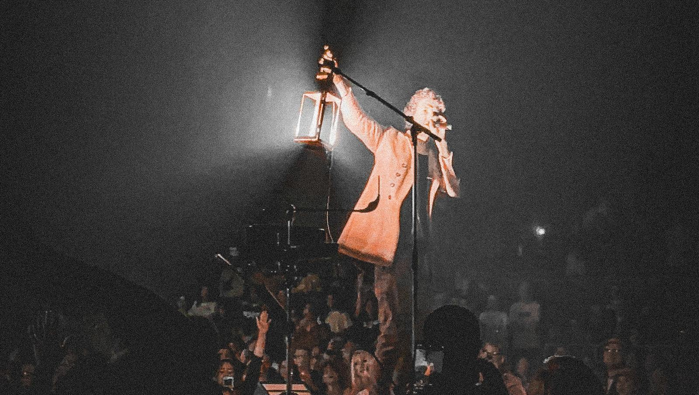
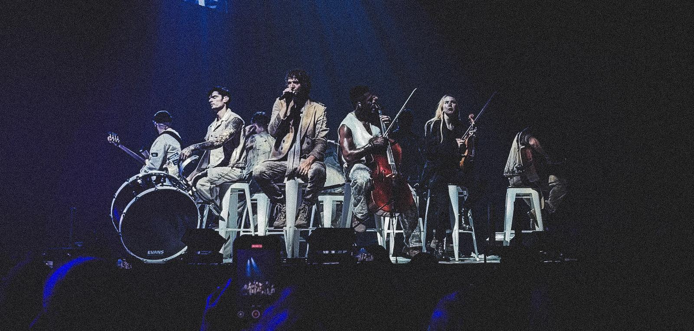
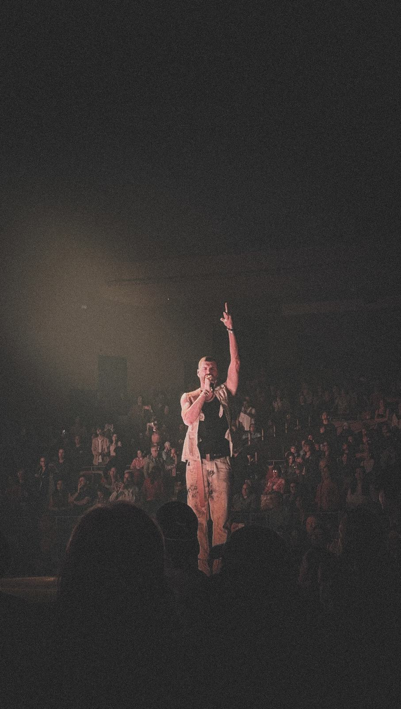
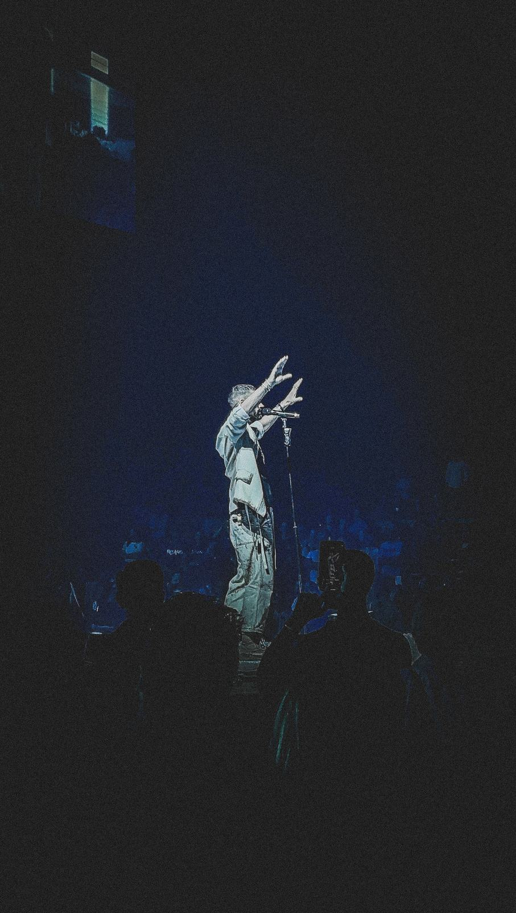
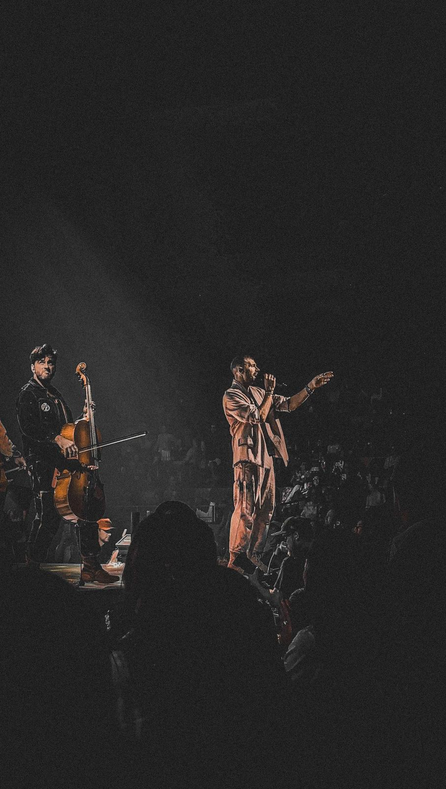
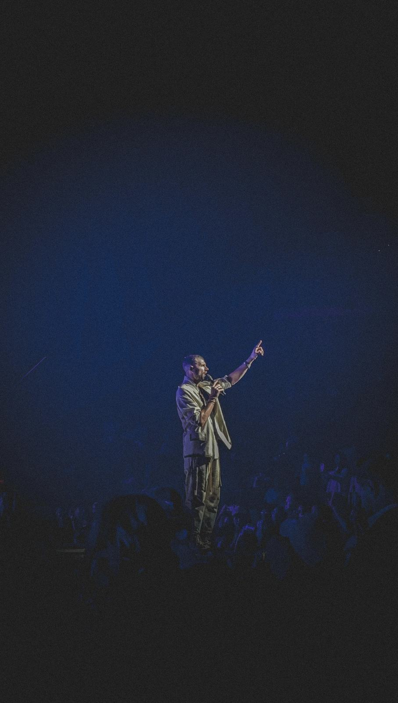
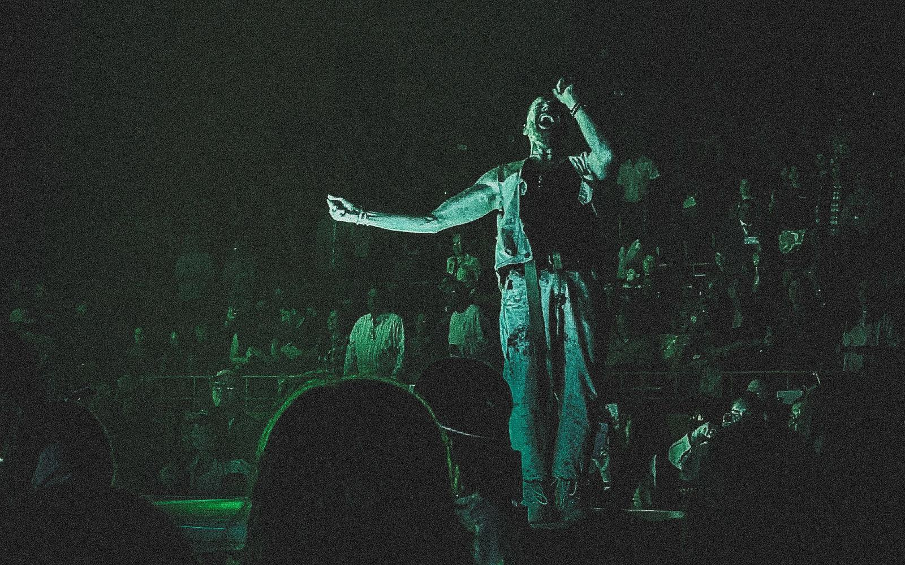
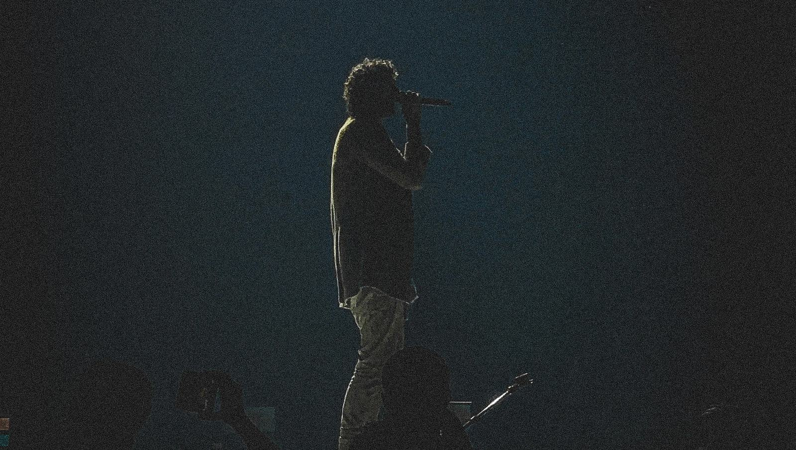

Setlist / Fotografía en vivo
for KING & COUNTRY
Fotografía del concierto de for KING & COUNTRY.
Movimiento, contraluz y público: la banda en el escenario y entre la gente.
Tratamiento con grano fino y tonos apagados para que la luz de escena sea la protagonista.
16fotografías
B/N + colortratamiento
Liveconcierto














 Siguiente en el setlist
Matchday's 2022–23
Siguiente en el setlist
Matchday's 2022–23